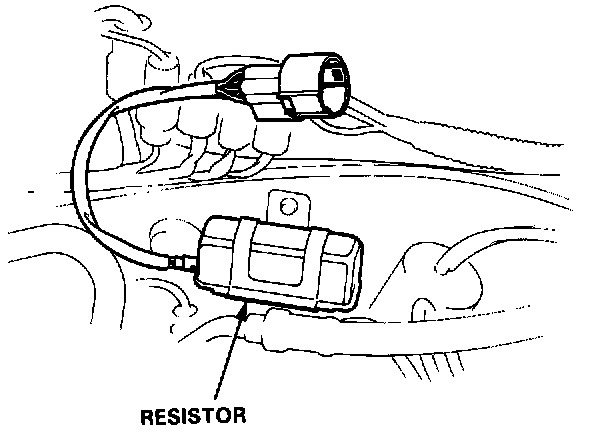
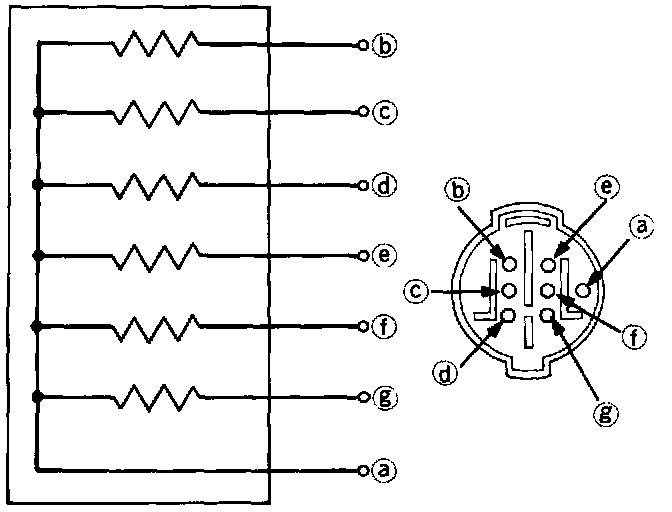

Fuel Injector Resistor: Testing and Inspection

Injector Resistor Test
1. Disconnect the resistor connector.

2. Check for resistance between each of the resistor terminals (g, f, e, d, c and b) and the power terminal (a).
Resistance should be: 5 - 7 ohms
Replace the resistor with a new one if any of the resistances are outside of the specification.